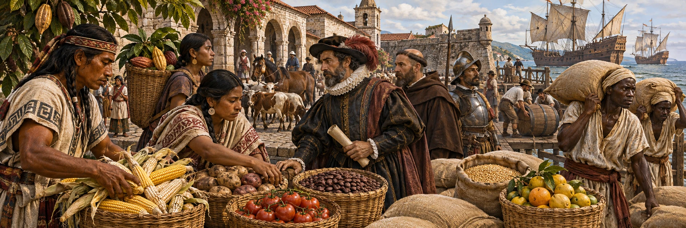

1492 onward
Columbian Exchange

Plants, animals, pathogens, and people moved between Afro-Eurasia and the Americas on an unprecedented scale.
Open this moment in the timeline1492 onward

Plants, animals, pathogens, and people moved between Afro-Eurasia and the Americas on an unprecedented scale.
Open this moment in the timeline